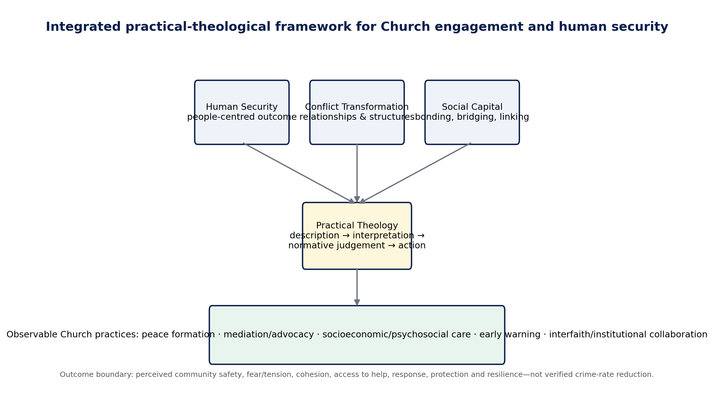
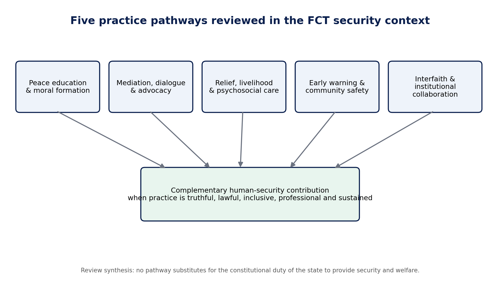

PIONEER PUBLICATION · ACCEPTED ARTICLE · REVIEW ARTICLE · HUMANITIES & SOCIAL SCIENCES · THEOLOGY · PEACE & SECURITY
Church Engagement and Human Security in Nigeria: An Integrative Review of Practical Theology, Conflict Transformation and Social Capital with Implications for Abuja
Syrenius Dangana Okoriko¹*, Charles Ogundu Nnaji¹, and Adeola Kehinde¹
¹Department of Christian Studies and Religious Communication, University of Abuja, Abuja, Nigeria
Correspondence: Syrenius Dangana Okoriko:dimeokodan2007@gmail.com
Article | Volume/Issue | Publication | ISSN | DOI |
|---|---|---|---|---|
e009 | 1(1) | Pioneer Issue · July 2026 | Pending assignment | Pending registration |
Abstract
Background: Nigeria’s insecurity is multidimensional, and the social reach of religious institutions has generated recurring claims that the Church can contribute to peace and community resilience. Those claims require a framework that distinguishes legitimate complementary action from coercive or state-substituting roles. Objective: To synthesize theological, peacebuilding, human-security and Nigerian evidence into a defensible framework for evaluating Church engagement with insecurity, with particular attention to the FCT. Methods: A critical integrative review synthesized foundational theory, Nigerian empirical/theological scholarship and recent official security evidence used in the doctoral research corpus. Sources were organized around five practice pathways: peace formation; mediation/advocacy; socioeconomic/psychosocial care; early warning/community safety; and institutional/interfaith collaboration. Synthesis: Human Security defines the people-centred outcome; Conflict Transformation explains changes in relationships, patterns and institutions; Social Capital explains the mobilization and risk of trust-bearing networks; practical theology disciplines the movement from description to normative judgement and action. Recent Nigeria/FCT evidence supports a multi-actor preventive approach but also shows why religious authority must be bounded by law, inclusion, verification, professional referral and public accountability. Conclusion: The Church’s most credible security role is complementary rather than substitutive. It lies in forming nonviolent moral agency, mediating and advocating without partisanship, reducing vulnerability through fair care, supporting verified/lawful early warning, and sustaining cross-boundary collaboration. Empirical evaluation should measure these practices and human-security outcomes without claiming causal crime reduction from institutional visibility alone.
Keywords: human security; practical theology; conflict transformation; social capital; religious peacebuilding; church and insecurity; interfaith collaboration; Nigeria
1. Introduction
Nigeria's insecurity cannot be adequately represented by one category of violence. Terrorism, kidnapping, communal conflict, livelihood disruption, displacement, misinformation and weak trust in institutions interact at household and community levels. The 2026 Global Terrorism Index reported 750 terrorism deaths in Nigeria in 2025, while Afrobarometer found that insecurity and kidnapping were widely experienced as serious problems. In the FCT, EUAA compiled security incidents across all six Area Councils, demonstrating that risk is not confined to distant insurgency zones (Afrobarometer, 2025; EUAA, 2026; IEP, 2026).
This environment has renewed interest in the public role of religious institutions. The Church can mobilize moral teaching, community trust, volunteers, buildings, relief networks and access to leaders. Yet religious authority is ambivalent: it can reconcile or polarize, care or discriminate, verify information or amplify fear, cooperate with public institutions or become partisan. Any serious theology of public security therefore needs empirical and ethical boundaries (Appleby, 2000).
The central argument of this review is that Church engagement should be evaluated through observable practices and people-centred outcomes rather than through institutional presence alone. The state retains the constitutional duty of security and welfare; churches contribute legitimately where their distinctive capacities—formation, mediation, care, information, networks and moral advocacy—complement lawful public action without assuming coercive authority.
2. Review Approach
This article is a critical integrative review developed from the literature corpus assembled for doctoral research on Church engagement and community insecurity in the FCT. It is not a registered systematic review or meta-analysis. Foundational works were retained where they originated enduring theoretical distinctions, while recent official and empirical sources were used for contemporary Nigerian and FCT relevance. The synthesis prioritized studies and documents that specified setting, mechanism, population or institutional role rather than relying on broad normative claims.
Evidence was organized around four analytic questions: What counts as security? Through what mechanisms can non-state religious actors plausibly affect it? Which relational resources enable or distort collective action? How should practical theology judge observed practice? These questions produced an integrated framework linking Human Security, Conflict Transformation, Social Capital and practical theology.

Figure 1. Integrated theoretical framework for evaluating Church engagement and human security.
3. Theoretical Architecture
3.1 Human Security: defining the outcome
UNDP's Human Development Report 1994 shifted the referent of security from territory alone to people and from weapons alone to a broader field of economic, food, health, environmental, personal, community and political insecurity. This breadth is useful for Church research because many religious practices do not directly affect police incident counts but may affect fear, cohesion, access to help, livelihood recovery and vulnerability. The approach nevertheless needs discipline: not every desirable social outcome should be relabeled security, and non-state activity must not obscure governmental responsibility (UNDP, 1994; United Nations General Assembly, 2012).
3.2 Conflict Transformation: explaining mechanisms and time horizons
Lederach's Conflict Transformation framework moves beyond settlement of isolated episodes to changes in relationships, recurring patterns, structures and institutions. This is well suited to religious peacebuilding because preaching, mediation, advocacy and interfaith work often operate through long-term relational change rather than immediate incident suppression. The framework also cautions against one-off events: a dialogue meeting has limited significance if follow-up, trust and institutional pathways disappear after the crisis.
3.3 Social Capital: mobilizing trust without romanticizing it
Coleman's account of social capital explains how obligations, norms and information-bearing networks facilitate collective action. Later civic scholarship distinguishes bonding, bridging and linking relationships. Churches often possess strong bonding capital, but insecurity crosses social boundaries; effective action therefore requires bridging to other communities and linking to institutions with legal or specialist competence. The same networks can also exclude outsiders, spread misinformation or protect institutional interests, so trust must be paired with accuracy, reciprocity and accountability (Coleman, 1988; Putnam et al., 1993).
3.4 Practical theology: from description to faithful action
Practical theology prevents empirical results from becoming a substitute for doctrine and prevents doctrine from being used as evidence of effectiveness. Osmer's movement from descriptive-empirical attention to interpretation, normative judgement and pragmatic action provides a disciplined sequence: observe what churches actually do, explain mechanisms and context, judge practice in relation to Christian commitments, and design more faithful action. In security work this sequence is especially important because moral authority can be harmed by unverified claims, partisan alignment or unsafe intervention.
Table 1. Complementary theoretical functions
Framework | Primary question | Operational contribution | Principal safeguard |
|---|---|---|---|
Human Security | What human conditions count as security? | Safety, fear, cohesion, assistance, protection, response, recovery | Do not turn all social welfare into “security” or displace the state |
Conflict Transformation | How can conflict-related patterns change? | Formation, mediation, de-escalation, institutional continuity | Avoid one-off event logic and simplistic causation |
Social Capital | How do networks enable collective action? | Bonding, bridging and linking trust/resources | Guard against exclusion, misinformation and institutional capture |
Practical Theology | How should the Church interpret and reform practice? | Description, interpretation, norm, action | Do not confuse statistical significance with theological truth |
4. Five Church-Engagement Pathways

Figure 2. Five practice pathways through which Church engagement may complement human-security action.
4.1 Theological peace education and moral formation
Peace teaching is relevant when it forms public conduct rather than merely repeating general ideals. Nigerian theological scholarship connects Christian teaching with nonviolence, reconciliation and the dignity of the neighbour, while studies of radicalization and interreligious tension show that counter-narratives can be weakened by fear, poor religious knowledge, disunity and structural deprivation (Ishaku et al., 2021; Ngwoke & Akabike, 2022; Obasi & Igbo, 2023; Tuduks, 2020). A credible practice therefore includes responsible interpretation of Scripture, rejection of revenge and collective blame, lawful citizenship, protection of vulnerable persons and resistance to rumours or inflammatory messages.
4.2 Mediation, dialogue and public advocacy
Religious actors can serve as conveners because they may possess local legitimacy, moral language and access across social levels. Haynes (2009) identifies mediation and good offices among constructive roles of religion, while Abu-Nimer (2001) emphasizes training, cultural competence and interreligious sensitivity. The risk is that mediation becomes episodic, advocacy becomes partisan, or vulnerable groups are spoken for without representation. Neutrality, safeguarding, consent and continuity are therefore substantive criteria rather than procedural details.
4.3 Socioeconomic empowerment, humanitarian relief and psychosocial care
Human Security makes material and psychosocial vulnerability part of the security conversation. Livelihood disruption, trauma, isolation and weak access to care can deepen insecurity even when immediate violence has ceased. Faith communities may offer food, shelter, livelihood support, pastoral listening and referral, but ethical quality depends on needs-based inclusion, professional limits and connections to qualified services. Humanitarian and spiritual-care guidance consistently warns against coercion, exclusion and role confusion (Goodwin & Kraft, 2022; Inter-Agency Standing Committee, 2018; Winiger & Goodwin, 2023).
4.4 Community-security engagement and early warning
Early warning is a particularly plausible complementary role because religious networks can observe local tension and communicate quickly. ECOWAS links warning to prevention, mediation and response; community-policing literature similarly recognizes the importance of citizen–agency cooperation. The ethical boundary is sharp: churches may verify, communicate and refer, but should not profile communities, name suspects publicly, conduct unauthorized surveillance or create vigilante structures (ECOWAS, 2008; Nigeria Police Act, 2020; Ordu & Nnam, 2017).
4.5 Institutional and interfaith collaboration
Insecurity frequently exceeds the competence of any one congregation. Interfaith, governmental, civil-society, health, legal and psychosocial partnerships create bridging and linking capacity. Abuja research on interreligious zones of peace suggests that religious peacebuilding interacts with governance and practical interests rather than operating in isolation (Ossai, 2021). Sustainable collaboration therefore requires clear roles, transparent information-sharing, referral pathways, feedback, conflict-of-interest safeguards and periodic review.
Table 2. Practice pathways, mechanisms and risks
Pathway | Observable practice | Human-security mechanism | Key risk |
|---|---|---|---|
Peace formation | Dignity, nonviolence, responsible Scripture use, rumour resistance | Norm formation and restraint under pressure | Generic teaching or inflammatory interpretation |
Mediation/advocacy | Neutral mediation, sustained dialogue, evidence-based advocacy | De-escalation, representation, grievance handling | Partisanship, elite-only dialogue, weak follow-up |
Socioeconomic/psychosocial care | Relief, livelihood support, pastoral listening, professional referral | Reduced vulnerability and stronger recovery | Favouritism, dependency, role confusion |
Early warning/community safety | Verified warnings, lawful reporting, preparedness, safeguarding | Earlier recognition and safer response | Rumour amplification, vigilantism, privacy harms |
Interfaith/institutional collaboration | Cross-faith coordination, agency/professional links, protocols | Bridging/linking resources and continuity | Token partnerships, unclear authority, crisis-only cooperation |
5. Contemporary Nigeria and FCT Implications
Contemporary evidence makes a multi-actor approach necessary but also raises the standard of proof. High national insecurity, the continued salience of kidnapping and recorded security events across the FCT create genuine demand for community resilience. At the same time, national survey evidence shows that religious leaders retain more public trust than many political institutions while cross-religious trust remains uneven. Religious influence is therefore a capacity, not a guarantee of benevolent use (Mbaegbu, 2024).
For research, the implication is methodological: studies should measure practices, exposure, reach and outcomes separately. A cross-sectional perception survey may legitimately estimate associations with perceived safety and resilience, but it cannot claim a verified decline in crime. Programme evaluation should add longitudinal timing, administrative service data, incident trends where safe, independent outcome measurement and negative-case analysis. For practice, the implication is institutional: Church action becomes more credible as it becomes more truthful, lawful, inclusive, professionally bounded and sustained.
6. Research and Policy Agenda
Develop validated, behaviourally specific measures of religious peacebuilding that separate observation from approval and include a genuine 'not observed' response.
Combine probability-based community surveys with programme records, service/referral data and longitudinal designs before making causal claims.
Study religious communication and misinformation as a distinct pathway connecting moral formation, social capital and risk escalation.
Evaluate interfaith and institutional collaboration through role clarity, inclusion, continuity, response quality and safeguarding—not event counts alone.
Compare metropolitan, peri-urban and rural FCT settings rather than assuming that central Abuja represents the Territory.
Retain explicit constitutional and ethical boundaries so community-security engagement complements authorized public institutions rather than creating parallel coercive systems.
7. Limitations of the Review
This is an integrative critical review, not a systematic review with exhaustive database searches, preregistration or formal risk-of-bias scoring. It privileges the literature corpus developed for the FCT doctoral study and therefore reflects its conceptual boundaries. Several foundational sources are older because they establish enduring theories; more recent official and Nigerian evidence was used for contemporary context. Future systematic reviews could map intervention types, study designs, geographic coverage and outcome quality across Nigerian faith-based peacebuilding research.
8. Conclusion
The Church has plausible and ethically distinctive capacities relevant to human security, but institutional visibility alone is not evidence of effectiveness. The most defensible model is complementary: Christian formation can discipline moral agency; mediation and advocacy can address relationships and grievances; fair care can reduce vulnerability; verified early warning can strengthen preparedness and referral; and interfaith/institutional collaboration can connect local trust to wider competence. Each pathway also carries risks that require law, safeguarding, professional limits and accountability. The research task is therefore to measure what churches actually do, whose safety and dignity are affected, under what conditions, and with what level of evidence.
Declarations
Declaration | Statement |
|---|---|
Ethics and consent | Not applicable to this critical integrative review. The article uses published scholarly, policy and documentary sources and reports no new participant-level analysis. The underlying doctoral field study is described only as contextual background where relevant. |
Funding | No external grant funding is declared for this review. |
Competing interests | The authors declare no competing interests relevant to the review. |
Data availability | No new primary dataset was generated or analysed for this review. The documentary and scholarly sources used are identified in the reference list; access conditions remain those of the source publishers. |
Author contributions | S.D.O.: conceptualization, literature synthesis, framework development and original drafting. C.O.N.: supervision, methodological and conceptual review, interpretation and critical revision. A.K.: co-supervision, theological interpretation and critical revision. All authors approved the submitted version and accept responsibility for the work. |
AI-assisted editorial disclosure | AI-assisted tools were used only for editorial organization, language refinement and document production. They were not treated as authors or sources of evidence. Human authors and editors remain responsible for source verification, claims, citations and interpretation. |
Related publications / corpus transparency | This article (e009) is part of a coordinated publication series developed from the doctoral research programme. Unlike e005–e008, it is a critical integrative review and does not report a separate analysis of the CECIQ participant dataset. Shared conceptual background is disclosed to prevent the appearance of independent empirical replication. |
Copyright and licence | © 2026 The authors. Published by CHIA TECH SOLUTIONS AND RESOURCES LIMITED. Planned version-of-record licence: Creative Commons Attribution 4.0 International (CC BY 4.0). |
References
Afrobarometer. (2025, May 29). Kidnapping and insecurity weigh heavily on Nigerians, Afrobarometer survey finds. https://www.afrobarometer.org/articles/kidnapping-and-insecurity-weigh-heavily-on-nigerians-afrobarometer-survey-finds/
American Association for Public Opinion Research. (2023). Standard definitions: Final dispositions of case codes and outcome rates for surveys (10th ed.). https://aapor.org/wp-content/uploads/2024/03/Standards-Definitions-10th-edition.pdf
Cochran, W. G. (1977). Sampling techniques (3rd ed.). Wiley.
Coleman, J. S. (1988). Social capital in the creation of human capital. American Journal of Sociology, 94(Suppl.), S95–S120. https://doi.org/10.1086/228943
European Union Agency for Asylum. (2026). COI report—Nigeria: Security situation. Publications Office of the European Union. https://www.euaa.europa.eu/nigeria-security-situation/212-fct-abuja
Federal Republic of Nigeria, Office of the National Security Adviser. (2019). National security strategy 2019. https://nctc.gov.ng/ova_doc/6456/
Institute for Economics & Peace. (2026). Global Terrorism Index 2026: Measuring the impact of terrorism. https://www.visionofhumanity.org/wp-content/uploads/2026/03/Global-Terrorism-Index-2026-Report.pdf
Kish, L. (1965). Survey sampling. Wiley.
Lederach, J. P. (1997). Building peace: Sustainable reconciliation in divided societies. United States Institute of Peace Press.
Mbaegbu, R. (2024). Nigerians view religious leaders as more trustworthy, less corrupt than public institutions (Afrobarometer Dispatch No. 900). https://www.afrobarometer.org/wp-content/uploads/2024/11/AD900-Nigerians-see-religious-leaders-as-more-trustworthy-than-public-institutions-Afrobarometer-14nov24.pdf
Osmer, R. R. (2008). Practical theology: An introduction. Eerdmans.
Polit, D. F., Beck, C. T., & Owen, S. V. (2007). Is the CVI an acceptable indicator of content validity? Appraisal and recommendations. Research in Nursing & Health, 30(4), 459–467. https://doi.org/10.1002/nur.20199
United Nations Development Programme. (1994). Human Development Report 1994: New dimensions of human security. Oxford University Press. https://hdr.undp.org/content/human-development-report-1994
United Nations General Assembly. (2012). Follow-up to paragraph 143 on human security of the 2005 World Summit Outcome (Resolution 66/290). https://undocs.org/A/RES/66/290
Wasserstein, R. L., & Lazar, N. A. (2016). The ASA statement on p-values: Context, process, and purpose. The American Statistician, 70(2), 129–133. https://doi.org/10.1080/00031305.2016.1154108
Appleby, R. S. (2000). The ambivalence of the sacred: Religion, violence, and reconciliation. Rowman & Littlefield.
Ishaku, B., Akşit, S., & Maza, K. D. (2021). The role of faith-based organizations in counter-radicalization in Nigeria: The case of Boko Haram. Religions, 12(11), 1003. https://doi.org/10.3390/rel12111003
Ngwoke, P. N., & Akabike, G. N. (2022). Insecurity and its implication for sustainable development in Nigeria: The role of religion. HTS Teologiese Studies/Theological Studies, 78(1), a7776. https://doi.org/10.4102/hts.v78i1.7776
Obasi, C. O., & Igbo, P. M. (2023). Isaiah 2:1–4 and insecurity in Nigeria: Towards building a non-violent society. Verbum et Ecclesia, 44(1), a2789. https://doi.org/10.4102/ve.v44i1.2789
The Holy Bible: New Revised Standard Version Updated Edition. (2021). National Council of Churches.
Tuduks, O. D. (2020). An empirical interrogation of the Christian/Muslim inter-religious challenges in Northern Nigeria. Stellenbosch Theological Journal, 6(4). https://doi.org/10.17570/stj.2020.v6n4.a16
United Nations Educational, Scientific and Cultural Organization. (2017). Preventing violent extremism through education: A guide for policy-makers. https://unesdoc.unesco.org/ark:/48223/pf0000247764
Economic Community of West African States. (2008). ECOWAS Conflict Prevention Framework. https://www.ecowas.int/wp-content/uploads/2024/08/ECOWAS-CONFLICT-PREVENTION-FRAMEWORK-new.pdf
Economic Community of West African States. (2020). ECOWAS Dialogue and Mediation Handbook. https://ecowas.int/wp-content/uploads/2022/08/Dialogue-and-Mediation-Handbook_en_PDF.pdf
Haynes, J. (2009). Conflict, conflict resolution and peace-building: The role of religion in Mozambique, Nigeria and Cambodia. Commonwealth & Comparative Politics, 47(1), 52–75. https://doi.org/10.1080/14662040802659033
Nigeria Police Act, 2020, Act No. 2 of 2020. https://placng.org/i/wp-content/uploads/2020/09/Police-Act-2020.pdf
Ordu, G. E.-O., & Nnam, M. U. (2017). Community policing in Nigeria: A critical analysis of current developments. International Journal of Criminal Justice Sciences, 12(1), 83–97. https://doi.org/10.5281/zenodo.345716
Abu-Nimer, M. (2001). Conflict resolution, culture, and religion: Toward a training model of interreligious peacebuilding. Journal of Peace Research, 38(6), 685–704. https://doi.org/10.1177/0022343301038006003
Bouta, T., Kadayifci-Orellana, S. A., & Abu-Nimer, M. (2005). Faith-based peace-building: Mapping and analysis of Christian, Muslim and multi-faith actors. Clingendael Institute.
Clarke, G. (2006). Faith matters: Faith-based organisations, civil society and international development. Journal of International Development, 18(6), 835–848. https://doi.org/10.1002/jid.1317
Ossai, E. C. (2021). Impact of religion on interreligious peace: Evidence from zones of peace in Abuja, Nigeria [Doctoral dissertation, University of Edinburgh]. Edinburgh Research Archive. https://era.ed.ac.uk/items/90cff6a3-2f57-4252-ae68-6866b9a3e1f5
Putnam, R. D., Leonardi, R., & Nanetti, R. Y. (1993). Making democracy work: Civic traditions in modern Italy. Princeton University Press. https://doi.org/10.2307/j.ctt7s8r7
Sampson, I. T. (2012). Religious violence in Nigeria: Causal diagnoses and strategic recommendations to the state and religious communities. African Journal on Conflict Resolution, 12(1), 103–133.
Goodwin, E., & Kraft, K. (2022). Mental health and spiritual well-being in humanitarian crises: The role of faith communities providing spiritual and psychosocial support during the COVID-19 pandemic. Journal of International Humanitarian Action, 7, 21. https://doi.org/10.1186/s41018-022-00127-w
Hobfoll, S. E., et al. (2007). Five essential elements of immediate and mid-term mass trauma intervention: Empirical evidence. Psychiatry, 70(4), 283–315. https://doi.org/10.1521/psyc.2007.70.4.283
Inter-Agency Standing Committee. (2018). A faith-sensitive approach in humanitarian response: Guidance on mental health and psychosocial programming. https://interagencystandingcommittee.org/mental-health-and-psychosocial-support-emergency-settings/documents-public/faith-sensitive-approach
Winiger, F., & Goodwin, E. (2023). Faith-sensitive mental health and psychosocial support in pluralistic settings: A spiritual care perspective. Religions, 14(10), 1321. https://doi.org/10.3390/rel14101321
Recommended citation: Okoriko, S. D., Nnaji, C. O., & Kehinde, A. (2026). Church Engagement and Human Security in Nigeria: An Integrative Review of Practical Theology, Conflict Transformation and Social Capital with Implications for Abuja. CHIATECH JOURNAL, 1(1), e009. DOI pending registration.